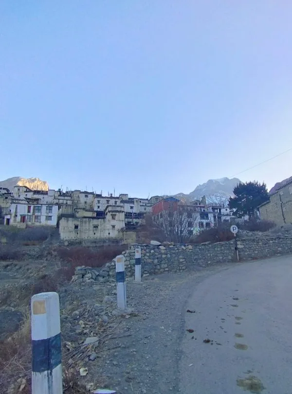
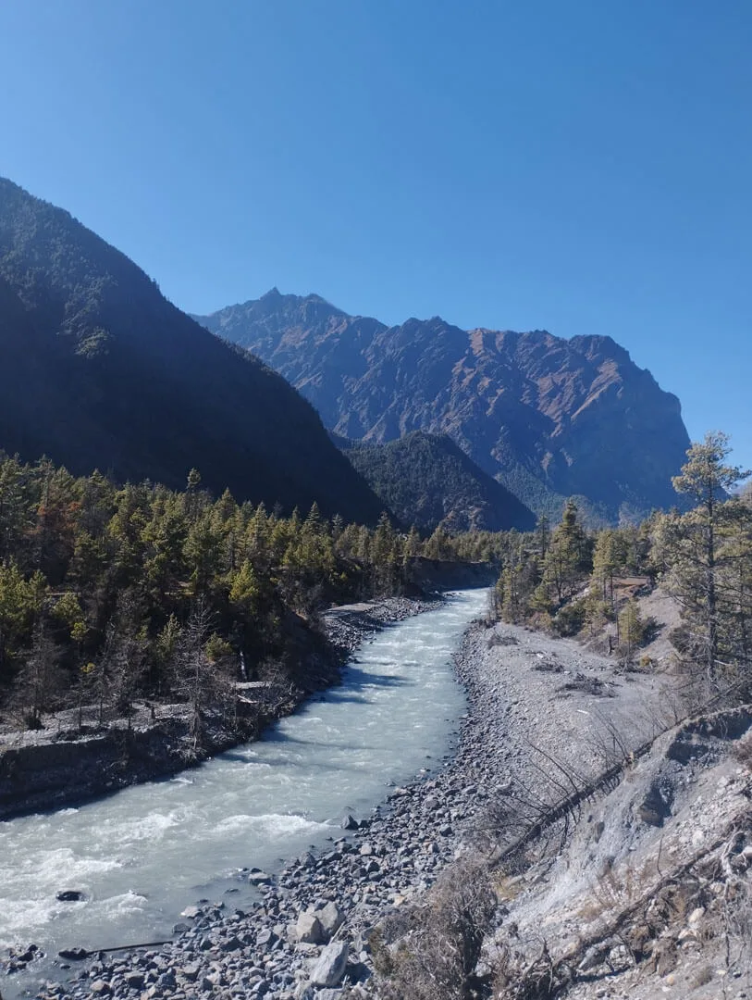

The Greatest Trek on Earth: Geographic Diversity & Timeless Legend
Since Nepal first opened its borders to foreign adventurers in the 1970s, the Annapurna Circuit has consistently ranked as one of the world's premier long-distance walking routes. While the Everest Base Camp trek offers incomparable high-altitude mountain drama focused on a single glaciated valley, the Annapurna Circuit delivers an extraordinary cultural and ecological sweep that no other Himalayan journey can rival.
Over a journey spanning 130 to 180 kilometers (depending on side trips and trailhead choices), you physically cross from the southern, monsoon-facing slopes of the Himalaya to the northern, arid high-altitude plateau of the Tibetan rim. You encounter Hindu Gurung and Magar farming hamlets in the lower valleys, transition into the ancient Tibetan Buddhist homelands of the Manangi people in the upper valley, conquer the highest trekking mountain pass in the world at Thorong La (5,416m), and descend into the sacred, wind-sculpted kingdom of Mustang along the deepest gorge on Earth—the Kali Gandaki.
The Modern Circuit Reality: Do not listen to outdated rumors claiming the Annapurna Circuit has been ruined by roads. By utilizing private 4WD jeeps to bypass low-altitude paved road sections and following the marked red-and-white NATT (Natural Annapurna Trekking Trail) walking tracks, you experience over 100 kilometers of pristine, road-free wilderness hiking.
The Road Reality: How New Dirt Roads Reshaped the Modern Circuit
Honesty regarding road construction is paramount. Over the past fifteen years, dirt motor roads built by the Nepalese government have connected remote mountain villages to the outside world, bringing electricity, healthcare, and trade to isolated mountain communities. Roads now extend from Besisahar up to Manang on the eastern side, and from Beni up through Jomsom to Muktinath on the western side.
How does this affect the modern trekker?
- The Outdated Circuit: Historically, trekkers spent 21 to 24 days walking along dusty gravel roads from Dumre to Pokhara. Walking on these active dirt roads today is dusty, uninspiring, and unnecessary.
- The Smart 2027 Circuit: Modern trekkers hire a private 4WD jeep from Besisahar directly to Dharapani (1,960m) or Chame (2,710m). From Chame to Manang, you hike along the spectacular NATT trails on the opposite river bank, entirely separated from vehicles. Past Manang and across Thorong La to Muktinath, there are zero roads—only raw, high-alpine wilderness.
- Western Sector Flexibility: After descending from Thorong La into Muktinath, hikers can either fly out of Jomsom to Pokhara (20 mins), take a private jeep down the Kali Gandaki, or continue walking through the traditional apple orchards of Marpha and Kalopani.

Five Ecological Worlds in One Journey: Sub-Tropical to Tibetan Plateau
No other trek on Earth transitions through such dramatic ecological biodiversity in a single two-week walk. The Annapurna Circuit leads you through five distinct ecological realms:
| Elevation Range | Ecological Zone | Landscape & Flora Character | Night Temperature |
|---|---|---|---|
| 800m - 1,800m | Sub-Tropical Lowlands | Terraced rice paddies, bamboo groves, roaring river waterfalls. | 14°C to 18°C |
| 1,800m - 2,800m | Temperate Pine Forest | Towering blue pines, hemlock, oak, and blooming rhododendrons. | 6°C to 10°C |
| 2,800m - 4,000m | Sub-Alpine Valley | Arid scrub, juniper bushes, apple orchards, and vertical limestone cliffs. | 0°C to -4°C |
| 4,000m - 5,416m | High Alpine Tundra | Barren moraines, scree fields, hanging glaciers, and frozen tarns. | -8°C to -18°C |
| 2,800m - 3,800m (West) | Trans-Himalayan Rain Shadow | Wind-carved desert badlands, ochre mud cliffs, eroded river canyons. | 2°C to -5°C |
Conquering Thorong La Pass (5,416m): High-Altitude Battle & Timing
At an altitude of 5,416 meters (17,769 feet), Thorong La Pass is the undeniable climax of the Annapurna Circuit. Perched on the razor saddle between Thorong Peak (6,144m) and the Khatung Kang ridge, crossing this pass is a test of cardiovascular fortitude, mental stamina, and cold-weather discipline.
The crossing begins well before dawn—typically at 4:00 AM or 4:30 AM from Thorong Phedi (4,450m) or 5:00 AM from High Camp (4,880m). Trekkers climb by the beam of their headlamps under a canopy of blazing Himalayan stars, breathing freezing sub-zero air (-12°C to -18°C). The ascent from High Camp takes 3 to 4 hours of slow, deliberate zigzagging across frozen scree and snow slopes.
The 10:00 AM Thorong La Wind Rule: You must reach the summit of Thorong La by 9:00 AM or 10:00 AM at the latest. After 10:00 AM, high-velocity thermal winds surge through the pass from the arid Tibetan plateau, dropping wind-chill temperatures to dangerous sub-zero extremes and whipping blinding clouds of dust and snow into hikers' faces.
Reaching the iconic chorten festooned with thousands of multicolored Tibetan prayer flags at 5,416m is an unforgettable triumph. But the day is only half finished: you must then descend 1,600 vertical meters over 4 to 5 knee-jarring hours down to the sacred village of Muktinath (3,800m).

The Tilicho Lake Detour: Glacial Grandeur at 4,919 Meters
If you have three extra days to spare, taking the detour to Tilicho Lake (4,919m) is the single greatest side excursion on the entire Annapurna Circuit. Situated in a desolate, glacial amphitheater beneath the colossal 'Great Barrier' (a 7,000m wall connecting Tilicho Peak to the Annapurnas), Tilicho is one of the highest high-altitude alpine lakes on the planet.
The trek departs from Manang, passing through Khangsar and traversing the notorious Tilicho Landslide Area—a stunning, moonscape-like scree slope carved into sheer shale cliffs above the river. From Tilicho Base Camp (4,150m), an early morning 3-hour climb brings you to the edge of the turquoise, ice-strewn lake. The pristine reflection of the glaciated Great Barrier mirrored in Tilicho's icy waters is a visual masterpiece that elevates your expedition from great to extraordinary.

Manangi Culture & Sacred Muktinath: Shrines, Monasteries & Fossils
The cultural tapestry of the Annapurna Circuit is as rich as its geography. In the upper valley, the indigenous Manangi people practice a distinctive form of Tibetan Buddhism rooted in the ancient Nyingma and Kagyupa lineages. The villages of Braga and Manang feature flat-roofed stone houses clustered together on south-facing sun terraces, ancient mani walls inscribed with sacred mantras, and 500-year-old cliffside monasteries (gompas) housing sacred thangkas and golden Buddha statues.
On the western side of Thorong La lies Muktinath (Chumig Gyatsa)—one of the most venerated pilgrimage destinations in the Himalaya for both Hindus and Buddhists. Here, 108 sacred brass water spouts in the shape of boar heads flow from natural mountain springs, and natural methane gas flames burn continuously on water inside the Jwala Mai temple. Further down the Kali Gandaki, you will find Shaligrams—sacred black ammonite fossils embedded in river stones dating back 150 million years to the ancient Tethys Sea.

The Definitive 14-Day Circuit Itinerary: Paced Elevation & Safe Crossing
This 14-day master itinerary provides optimal acclimatization, incorporates the spectacular upper NATT route through Upper Pisang and Ngawal, and provides a safe crossing over Thorong La:
| Day | Route Segment | Distance | Trek Hours | Overnight Alt. | Strategic Highlight |
|---|---|---|---|---|---|
| Day 01 | Drive Kathmandu to Besisahar, 4WD jeep to Dharapani | 190 km drive | 7 - 8 hrs drive | 1,960 m | Bypasses lower road; enter dramatic pine gorge. |
| Day 02 | Dharapani to Chame via Timang waterfall | 15.5 km | 5.5 - 6 hrs | 2,710 m | First views of Manaslu; Apple orchards and pine forests. |
| Day 03 | Chame to Upper Pisang via Paungda Danda rock face | 14.0 km | 5 - 5.5 hrs | 3,310 m | Behold the curved 1,500m curved slate slab of Swarga Dwari. |
| Day 04 | Upper Pisang to Manang via Ghyaru & Ngawal (Upper Trail) | 19.5 km | 6.5 - 7.5 hrs | 3,540 m | Best views of trek: 360° front-row panorama of Annapurnas. |
| Day 05 | Acclimatization Day in Manang (Hike to Chongkor Viewpoint) | 6.0 km | 3 - 4 hrs | 3,540 m | Visit Milarepa Cave or Gangapurna Glacier lake; acclimatize. |
| Day 06 | Manang to Siri Kharka (Tilicho Detour Day 1) | 10.0 km | 4.5 - 5 hrs | 4,060 m | Ascend out of main valley toward barren western peaks. |
| Day 07 | Siri Kharka to Tilicho Base Camp via Landslide Area | 7.5 km | 4 - 4.5 hrs | 4,150 m | Traverse the surreal moonscape scree slopes of Tilicho. |
| Day 08 | Hike to Tilicho Lake (4,919m), return to Siri Kharka | 14.5 km | 6.5 - 7.5 hrs | 4,060 m | Stand beside turquoise glacial waters beneath Great Barrier. |
| Day 09 | Siri Kharka to Yak Kharka via Upper Gunsang bypass | 10.5 km | 4.5 - 5 hrs | 4,050 m | Rejoin classic circuit route; herds of yaks grazing on tundra. |
| Day 10 | Yak Kharka to Thorong Phedi / High Camp | 7.0 km | 3.5 - 4.5 hrs | 4,450 m / 4,880m | Cross suspension bridge; rest early for pass crossing. |
| Day 11 | Cross Thorong La Pass (5,416m), descend to Muktinath | 15.0 km | 7.5 - 9 hrs | 3,800 m | 4:30 AM departure; conquer Thorong La; descend to Muktinath. |
| Day 12 | Muktinath to Jomsom via Kagbeni & Kali Gandaki | 18.0 km | 5 - 6 hrs | 2,720 m | Explore Kagbeni gateway to Upper Mustang; hunt for Shaligram fossils. |
| Day 13 | Morning flight Jomsom to Pokhara (20 mins) or 4WD jeep | Scenic flight | 20 mins | 820 m | Fly down the Kali Gandaki between Annapurna & Dhaulagiri! |
| Day 14 | Fly or drive Pokhara to Kathmandu | Scenic flight | 25 mins | 1,400 m | Celebratory farewell dinner in Thamel, Kathmandu. |

Teahouse Gastronomy: Manang Bakeries, Yak Cheese & Dal Bhat
Food on the Annapurna Circuit is legendary among Himalayan trails. Because the lower and mid valleys are connected by road, teahouse kitchens are exceptionally well-stocked, and the culinary creativity of local Gurung and Thakali communities is renowned:
- The Bakeries of Manang: After days of mountain hiking, walking into Manang village and smelling freshly baked apple crumbles, cinnamon rolls, and chocolate brownies in German bakeries is pure ecstasy. Manang even features rustic movie halls screening classic mountaineering documentaries with hot popcorn!
- Yak Cheese & Buckwheat: In villages like Chame and Braga, local cooperatives produce fresh, nutty yak cheese. Try local buckwheat pancakes (Kodo ko Roti) served with honey or yak cheese.
- Thakali Dal Bhat: The Thakali people of the Kali Gandaki valley are famous throughout Nepal as the master cooks of Dal Bhat. A Thakali Dal Bhat features buckwheat fritters, slow-cooked lentils spiced with local jimbu herb, fragrant seasonal greens, and homemade radish pickles.

Acclimatization Science: Surviving Thorong Phedi and High Camp
Thorong La Pass (5,416m) is higher than Everest Base Camp (5,364m). At 5,400 meters, effective oxygen levels drop to just 50% of sea-level pressure. Ascending to this elevation without disciplined acclimatization guarantees acute mountain sickness, pulmonary edema, or forced retreat.
Follow these essential medical protocols:
- Mandatory 2-Night Stay in Manang (3,540m): Never skip your rest day in Manang. Spend your rest day hiking up to Chongkor Viewpoint or Praken Gompa (4,000m) to practice 'climb high, sleep low.'
- Thorong Phedi (4,450m) vs High Camp (4,880m): High Camp shortens pass day by 1 hour, but sleeping at 4,880m carries high risk of altitude insomnia and severe headache. For 80% of trekkers, sleeping lower at Thorong Phedi provides far better rest and physical recovery before summit morning.
- Diamox (Acetazolamide) Protocol: Consult your physician about carrying Diamox (125mg to 250mg twice daily). If taken starting in Manang, Diamox acidifies the blood, stimulating respiratory drive during sleep and accelerating natural acclimatization.
Packing for Extreme Temperature Swings (+25°C to -15°C)
The Annapurna Circuit requires packing for two opposite climatic extremes. You will hike in shorts and a t-shirt in 24°C heat in Dharapani, and need full sub-zero expedition down gear at -15°C crossing Thorong La. Packing versatility is everything:
- Footwear: Broken-in, waterproof Gore-Tex trekking boots with stiff soles for rocky scree slopes on Thorong La.
- Sleeping Bag: A four-season down sleeping bag with a comfort rating of -15°C to -20°C. Teahouse rooms at High Camp and Thorong Phedi freeze solid.
- Traction Microspikes: Essential for crossing icy snow patches on the high traverses approaching Thorong La and Tilicho Lake.
- Alpine Sunglasses (Cat 3 or 4): Snow reflection on the Thorong La plateau is blinding. High-UV polarized sunglasses prevent severe snow blindness.
- Windproof Outer Shell: A rugged Gore-Tex hard shell jacket with storm hood to deflect the ferocious gale-force winds of the pass.
Permits & Regulations: ACAP, TIMS & Mandatory Certified Guide
All foreign hikers undertaking the Annapurna Circuit must possess valid government-issued permits, verified at multiple checkposts (Dharapani, Chame, Manang, and Muktinath):
- Annapurna Conservation Area Permit (ACAP): NPR 3,000 (~USD $23) per person.
- TIMS Card (Trekkers' Information Management System): NPR 2,000 (~USD $15) per person.
- Mandatory Guide Rule: Foreign trekkers are legally required by the Nepal Tourism Board to hike with a certified guide registered through a licensed trekking agency. On the Circuit, your guide is critical: they monitor daily snow conditions on Thorong La, secure high-camp teahouse beds, and coordinate emergency response.
Jeep Logistics: Smart Trailhead Extensions & Fly-Out from Jomsom
Smart transport choices will save you days of dusty walking and make your expedition seamless:
- Kathmandu to Trailhead: Book a private Scorpio 4WD jeep from Kathmandu all the way to Dharapani. You depart your Kathmandu hotel at 6:30 AM and reach your first lodge in Dharapani by 3:00 PM, avoiding the chaotic public bus transfer in Besisahar.
- Jomsom to Pokhara Flight: After conquering the pass and exploring Muktinath, take a 20-minute mountain flight from Jomsom Airport (JMO) to Pokhara. The flight cruises through the Kali Gandaki canyon directly between the 8,000-meter giants of Dhaulagiri I (8,167m) and Annapurna I (8,091m)—one of the most spectacular aerial journeys on Earth! Ticket: ~$135 USD.

Total Expedition Budget: Teahouse Costs, Permits, Jeeps & Tipping
The Annapurna Circuit is one of the most cost-effective long-distance treks in the world. Below is a realistic 2027 budget breakdown for a 14-day fully supported expedition:
| Expedition Expense Category | Estimated Cost (NPR) | Estimated Cost (USD) | Budget Notes |
|---|---|---|---|
| Permits (ACAP + TIMS) | NPR 5,000 | ~$38 | Fixed official government fees per trekker. |
| Private 4WD Jeep (Kathmandu to Dharapani) | NPR 18,000 - 24,000 total | ~$135 - $180 total | Split between group members; private 4WD. |
| Teahouse Lodging (12 nights) | NPR 600 - 1,200 / night | ~$5 - $9 / night | Twin room; prices rise slightly at Thorong Phedi/High Camp. |
| Daily Meals & Hot Drinks (14 days) | NPR 3,500 - 4,500 / day | ~$26 - $34 / day | Three hot meals, snacks, and boiled drinking water daily. |
| Scenic Flight (Jomsom to Pokhara) | NPR 18,000 | ~$135 | 20-min flight through Kali Gandaki gorge (or $30 jeep). |
| Certified Trekking Guide | NPR 3,800 - 4,800 / day | ~$28 - $36 / day | Includes guide wage, food, lodging, and professional insurance. |
| Porter (Carries 18-20kg duffel) | NPR 2,800 - 3,500 / day | ~$21 - $26 / day | Highly recommended for carrying bulky high-camp gear. |
The 10 Commandments of an Epic Annapurna Circuit Trek
To ensure your Annapurna Circuit adventure is an extraordinary, life-defining success, follow these ten battle-tested rules:
- Take the Upper NATT Trail (Upper Pisang to Ngawal): Never walk the dusty lower road. The upper trail via Ghyaru offers the greatest 360-degree mountain panoramas in Nepal.
- Never Skip the Rest Day in Manang: Acclimatization at 3,540m is essential to cross Thorong La safely.
- Add the Tilicho Lake Detour If Time Permits: The Great Barrier and turquoise waters of Tilicho (4,919m) are unforgettable.
- Start Thorong La by 4:30 AM: Beat the ferocious 10:00 AM pass winds and arrive in Muktinath before afternoon heat.
- Carry Traction Microspikes: Icy snow patches on high passes require sure-footed traction to prevent dangerous slips.
- Eat Fresh Dal Bhat Twice Daily: Power your body with clean, digestible carbohydrates, lentils, and unlimited refills.
- Drink 4 Liters of Warm Fluids Daily: Dehydration is the #1 accelerant of Acute Mountain Sickness.
- Bring Cash in Small Bills: Withdraw at least NPR 40,000 in Kathmandu; there are zero ATMs between Besisahar and Jomsom.
- Fly Out of Jomsom to Pokhara: Crown your trek with an exhilarating 20-minute flight between Dhaulagiri and Annapurna.
- Trek With a Trusted Local Agency: Partner with Igloo Himalaya Treks for expert Sherpa guides, seamless logistics, and total mountain safety.

Ready to Experience the Himalayas?
Whether you are preparing for high-altitude trekking, cultural circuits, or alpine summit expeditions, start planning a bespoke journey tailored to your fitness, travel season, and style.